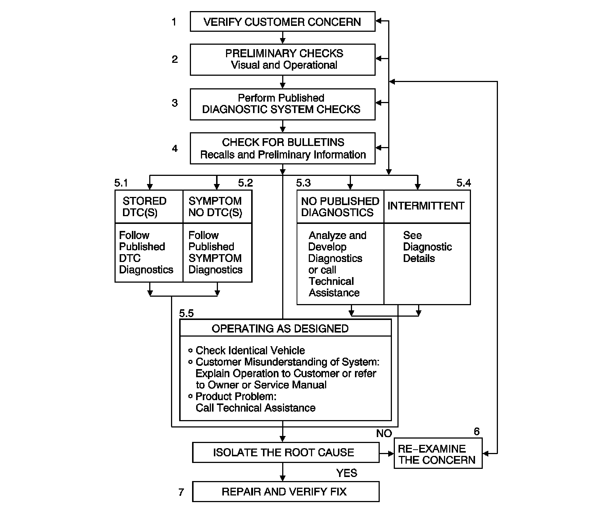

Strategy Based Diagnosis
STRATEGY BASED DIAGNOSIS
The goal of Strategy Based Diagnostics is to provide guidance when you create a plan of action for each specific diagnostic situation. Following a similar plan for each diagnostic situation, you will achieve maximum efficiency when you diagnose and repair vehicles. Although each of the Strategy Based Diagnostics boxes is numbered, you are not required to complete every box in order to successfully diagnose a customer concern. The first step of your diagnostic process should always be, verify the Customer Concern box. The final step of your diagnostic process should be Repair and verify the Fix box 7. Refer to the chart for the correct Strategy Based Diagnostics.

1. Verify the Customer Concern: The first part of this step is to obtain as much information as possible from the customer. Are there aftermarket accessories on the vehicle? When does the condition occur? Where does the condition occur? How long does the condition last? How often does the condition occur? In order to verify the concern, the technician should be familiar with the normal operation of the system and refer to the owner or service data for any information needed.
2. Preliminary Checks: Conduct a thorough visual inspection. Review the service history. Detect unusual sounds or odors. Gather diagnostic trouble code (DTC) information in order to achieve an effective repair.
3. Perform Published Diagnostic System Check: The Diagnostic System Check verifies the proper operation of the system. This will lead the technician in an organized approach to diagnostics.
4. Check Bulletins, Recalls and Preliminary Information (PI)s.
5.1. Stored DTCs: Follow the designated DTC in order to make an effective repair.
5.2. Symptom No DTC: Select the appropriate symptom. Follow the diagnostic steps or suggestions in order to complete the repair.
5.3. No Published Diagnostics: Analyze the Concern. Develop a plan for the diagnostics. The service data schematics will help you to see system power, ground, input and output circuits. You can also identify splices and other areas where multiple circuits are tied together. Look at component locations to see if components, connectors or harnesses may be exposed to extreme temperature, moisture, road salt or other corrosives battery acid, oil or other fluids. Utilize the wiring diagrams, system description and operation, and system circuit description.
5.4. Intermittents: An intermittent condition is one that does not occur continuously and will occur when certain conditions are met. Generally, intermittents are caused by faulty electrical connections and wiring, malfunctioning components, electromagnetic/radio frequency interference, and aftermarket equipment. Combine technician knowledge with efficient use of the available service information. Evaluate the symptoms and conditions described by the customer. Use a check sheet or other method in order to identify the component. Follow the suggestions for intermittent diagnosis found in the service data. A scan tool and a digital multi-meter may have data capturing capabilities that can assist in detection of intermittents.
5.5. Vehicle Operates as Designed: This condition exists when the vehicle is found to operate normally. The condition described by the customer may be normal. Compare with another like vehicle that is operating normally under the same conditions described by the customer. Explain your findings and the operation of that system to the customer.
6. Re-examine the Concern: If a technician cannot successfully find or isolate the concern, a re-evaluation is necessary. Re-verify the concern. The concern could be an intermittent or normal condition.
7. Repair and Verify Fix: After isolating the cause, make the repairs and validate for the correct operation. Verify that the symptom has been corrected, which may involve road testing the vehicle.